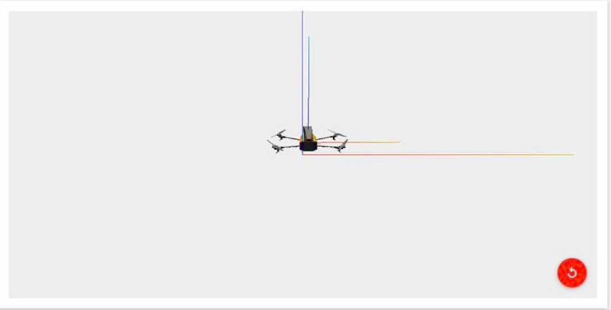

四軸平衡 × PYTHON
Created by Teaching Group, EEcamp
Before
our fantastatic adventure
Today's target
使四軸能平衡的飛行
Now the adventure begins...
大綱
- 什麼是程式語言
- 變數、if else、迴圈
- 一題閱讀測驗
什麼是程式語言！？
WTF is a Programming Language!?
跟
電腦
溝通的語言
ＸＸ
說你好
>>print("Hello, world!")
執行Python程式
step1: 開啟終端機(Terminal)
方法: 滑鼠右鍵->開啟終端機 or Ctrl+Alt+T
% >> ls
step2: 將路徑移至桌面
方法: 在終端機輸入
eecamp@eecamp in ~
% >> cd ~/Desktop
step3: 創建.py檔
方法:
eecamp@eecamp in ~/Desktop
% >> subl FileName
ex:
eecamp@eecamp in ~/Desktop
% >> subl test.py
step4: 輸入code
方法: 打上 print("Hello World!")
print("Hello World!")
step5: 存檔&離開
方法: 左上角 File->Save or Ctrl + S
方法: 左上角 File->Quit or Ctrl + Q
step6: 執行.py檔
如Terminal仍在執行sublime，輸入Ctrl + C 中斷
方法:
eecamp@eecamp in ~/Desktop
% >> python3 FileName
ex:
eecamp@eecamp in ~/Desktop
% >> python3 test.py
變數
Variables
舉個簡單的例子
a=1
b=2
b=a+b
print(a)
#1
print(a+b)
#4
'#' is a comment , computer won't execute it
運算元
operators
算術運算元(I)
a = 99 + 1
b = 102 - 2
c = 10 * 10
d = 200 / 2
算術運算元(II)
a = 10 % 3
b = 10 ** 2
c = 10.89 // 2
Assignment Operator (I)
a += 10 # a = a + 10
b -= 10 # b = b - 10
c *= 10 # c = c * 10
d /= 10 # d = d / 10
Assignment Operator (II)
a **= 10 # a = a ** 10
b //= 10 # b = b // 10
Comparision Operator
a = 5
print (a == 1 ) # False
print (a > 2) # True
print (a < 2) # False
print (a >= 3) # True
print (a <= 2) # False
print ( a != 1) # True
Logical Operators
a = 1
print(a == 1 and a > 0) # True
print(a == 1 and a < 0) # False
print(a == 1 or a < 0) # True
print(a == 0 or a < 0) # False
print(not a == 1) # False
字串
String
一串字
"電機營"
'好棒棒'
舉個簡單的例子
a="好 "
b="慘"
b=a+b
print(a) #輸出 好
print(a + b) #輸出 好 慘
LIST
一列東西
Zero-based
從零開始數
a[0], a[1], a[2], ...舉個簡單的例子
a=[ "Episode", 2015, " × ", " is the BEST!", " EEcamp"]
print(a[1],a[4],a[2],a[0],a[3])
#輸出2015 EEcamp × Episode is the BEST!
判斷式
if, elif(else if), else
if
if 判斷式:
要做的事
判斷式成立時，執行要做的事
舉個簡單的例子
if WeatherToday=="颱風天": #如果今天是颱風天
GoWhitewaterRafting() #去泛舟
判斷式成立時，才執行要做的事
if... elif...
有很多判斷式
要一層一層判斷
並執行對應的事時使用
if 判斷式1:
判斷式1成立時要做的事
elif 判斷式2:
判斷式1不成立，且判斷式2成立時要做的事
elif 判斷式3:
...
舉個簡單的例子
if WeatherToday=="颱風天": #如果今天是颱風天
GoWhitewaterRafting() #去泛舟
elif WeatherToday=="下雨天": #如果今天下雨
PrepareForEarthquake() #防震準備
else
不然的話
if 判斷式1:
判斷式1成立時要做的事
elif 判斷式2:
判斷式1不成立，且判斷式2成立時要做的事
...
else:
前面所有判斷式不成立時，要做的事
舉個簡單的例子
if Weather=="颱風天": #若今天是颱風天
GoWhitewaterRafting() #去泛舟
elif Weather=="下雨天": #如果今天下雨
PrepareForEarthquake() #防震準備
else:
GotoEEcamp() #來參加電機營
迴圈(loop)
for, while
while
while 判斷式:
要做的事
判斷式成立時，執行要做的事；
接著再檢查判斷式，若成立，再執行想做的事...
counter = 0
while counter < 10:
print("電機營好棒棒")
counter = counter + 1
縮排
counter = 0
while counter < 10:
print("電機營好棒棒")
counter = counter + 1
counter = 0
while counter < 10:
print("電機營好棒棒")
counter = counter + 1
兩者有何差別?
for
for 變數 in listName:
要做的事
將變數帶入listName中的所有值，分別執行要做的事...
sum = 0
aList = [1, 2, 3, 4, 5, 6]
for element in aList:
sum = sum + element
sum最終為多少...?
PID controller
- Proportional - 比例
- Integral - 積分
- Derivative - 微分
- Controller - 控制器
WTF is PID controller
控制我們的四軸在各種誤差、外部干擾導致傾斜時，
回復到平衡狀態的控制器。
P 的作用
簡單來講就是偏移量越多，給予的回復力越大,
成正比關係，以數學表示:
$F_p = -k_p \cdot x$
但若只有 $P$ 沒有 $I$、$D$，
我們的四軸就會進行簡諧運動、停不下來...
Open the firefox to see : )
P + D 的作用
$D$ 的作用是指若四軸有旋轉的角速度，系統會給予一個反向於角速度的力。以數學表示:
$F_d = - k_d \cdot \omega $(角速度)
將$P$與$D$結合可使四軸漸漸趨近於平衡狀態，
不會處於震盪狀態。
但若沒有 $I$，且機器本身並未完美，
可能平衡狀態會是斜的...
Open the firefox to see : )
P + I + D 的作用
$I$ 的作用是計算誤差對時間的累加(積分)，並做出修正。以數學表示:
$F_i = - k_i \cdot $ (誤差對時間的累加)
將 $P$, $I$, $D$ 結合就可以使四軸完美平衡啦!
$F = F_p + F_d + F_i$
($F$ 為修正力)
Open the firefox to see : )
Challenge : 寫一個PID的函式
在EEcampTeaching資料夾中打開terminal，輸入:
eecamp@eecamp in ~/Desktop/EECampTeaching
% >> coffee server.coffee -n
打開firefox,在網址輸入:
localhost:8000
Challenge : 寫一個PID的函式
def __init__(self, kp, ki, kd, *, imax):
super().__init__(kp, ki, kd, imax=imax)
self.last_time = None
#定義...?
def get_control(self,t,err,derr):
if self.last_time is None:
self.last_time = t
return 0.
#算出up(P項)
#算出ud(D項)
#算出self.int_err (誤差對時間的累加)
#設定self.int_err (絕對值上限為self.int_restriction)
#算出ui(I項)
#更新 self.last_time
return (up + ui + ud)
Survival Guide(I)
- Don't set self.ki self.kd self.kp on your own!
- Use Tab for indent!
- Modify the idiot code(up=0,ui=0,ud=0)
Survival Guide(II)
If you have any problem,
ask powerful team-leaders and teaching group : )